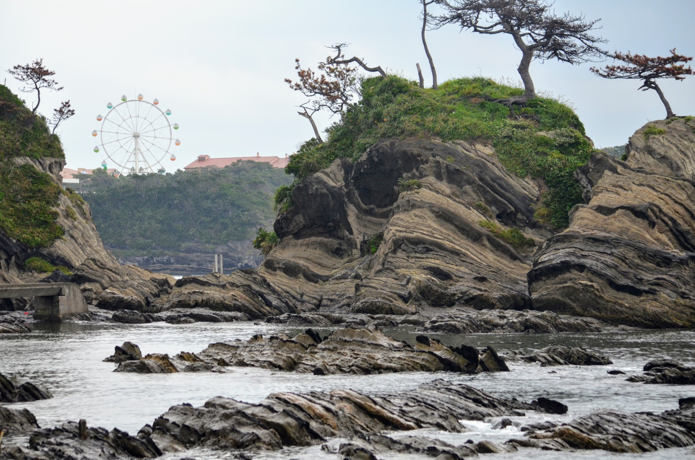

戻る
横須賀紀行
ソレイユの丘
道切り
荒崎公園

荒崎公園は相模湾に面しており、三浦半島屈指の景観が楽しめる公園である。 見晴らしが良く、条件が揃えば西方に富士山や箱根山、天城連山が望める。 海岸は「荒崎シーサイドコース」及び「関東ふれあいの道 荒崎・潮騒のみち」として遊歩道が整備されており、 コースを歩くことで切り立った崖、海蝕洞、岩礁、入り江といった自然美を観賞できる。
海岸沿いの遊歩道は、岩の狭い穴をくぐるような場所もあり、冒険心がくすぐられるのも魅力的でした。